Chronometer for the Web
A web port of Emerald Chronometer, an astronomical watch-face app originally built for iPhone and iPad.
View the project on GitHub · Credits · Privacy · Support · Disclaimer
Session state is persisted via URL only -- bookmark or share the URL to save your session. No cookies or local storage are used. See Privacy for more information.
General Help Topics
Privacy
Emerald Chronometer for the Web
Overview
Emerald Chronometer for the Web is a fully client-side application. It runs entirely in your browser and does not communicate with any application server for its core functionality.
Data Collection
The app itself does not collect, store, or transmit any personal data to any application server. There are no app-level analytics, tracking pixels, cookies, or telemetry of any kind.
Web Server Logs
When the app is served over HTTP or HTTPS, the hosting provider (SiteGround) records standard web server access logs for each page and resource request. These logs include:
- Your IP address
- The URL requested, including query-string parameters such as latitude, longitude, city name, and timezone
- Timestamp, HTTP status code, referrer, and browser user-agent string
These logs are retained by SiteGround for up to 30 days and are used solely for security monitoring and troubleshooting. They are not analyzed for user tracking purposes.
When running from file:// URLs (a local copy of the app), no
server is involved and no logs are generated.
Map Tile Requests
When you use the location dialog (on pages served via http:// or
https://), the app fetches map tile images from
OpenStreetMap
to display a preview of the selected location.
These requests are standard image fetches and do not include any metadata identifying the tile coordinates as your location — OpenStreetMap sees only which map tile was requested, the same as any map browsing.
Browser Location (Geolocation API)
If you tap "Use device location via browser", the app uses the browser's Geolocation API to obtain your coordinates. This data is processed entirely within the browser — the app never sends it to any application server.
The resolved coordinates are matched against a bundled database of approximately 47,000 cities to display a human-readable location name. This reverse-geolocation lookup happens entirely in the browser — no external geocoding service is contacted.
URL Parameters
The app stores your location settings (latitude, longitude, city name, timezone) as URL query parameters. This is the only persistence mechanism — no cookies or local storage are used.
Note: Because these parameters are part of the URL, they are visible in your browser history and, when served over HTTP or HTTPS, in the hosting provider's access logs.
Third-Party Services
- OpenStreetMap (map tiles only, HTTP/HTTPS only) — governed by OSM's privacy policy.
Contact
For questions about this privacy policy, please visit the project on GitHub.
Last updated: May 2026
Support
Emerald Chronometer for the Web
This free web app is served by a site run by volunteers and provides no support. All the website does is serve, as a convenience, files available from the GitHub releases page (see instructions for running the app here).
You are encouraged to report issues to the developers at the GitHub issues page here, but as the developers are also volunteers you may not get a response in a timely fashion.
Disclaimer
Emerald Chronometer for the Web
THIS FREE WEB APP IS PROVIDED “AS IS”, WITHOUT WARRANTY OF ANY KIND, EXPRESS OR IMPLIED, INCLUDING BUT NOT LIMITED TO THE WARRANTIES OF MERCHANTABILITY, FITNESS FOR A PARTICULAR PURPOSE AND NONINFRINGEMENT. IN NO EVENT SHALL THE AUTHORS OR COPYRIGHT HOLDERS BE LIABLE FOR ANY CLAIM, DAMAGES OR OTHER LIABILITY, WHETHER IN AN ACTION OF CONTRACT, TORT OR OTHERWISE, ARISING FROM, OUT OF OR IN CONNECTION WITH THE SOFTWARE OR THE USE OR OTHER DEALINGS IN THE SOFTWARE.
The pages served to your browser are available at the GitHub releases page (see instructions for running the app here).
Babylon
Babylon takes its name from the ancient city of Babylon, where early calendars were invented.Babylon displays a whole-month calendar in the usual format, including the last days of the previous month and the first days of the following month. See below for a description of the mechanics being simulated.
Two sets of red indicator wires (two horizontal and two vertical) move linearly to indicate the current day of the month (more precisely, the two horizontal indicators show the week, the two vertical ones show the weekday, and their intersection shows the current day).
A moon phase indicator like that of Chandra is present at the lower left, along with a month display at the top and a year display at the lower right.
The calendar display is implemented with stacked wheels which rotate to show the configuration for the current month in the window at the top of the dial. There are two primary wheels:
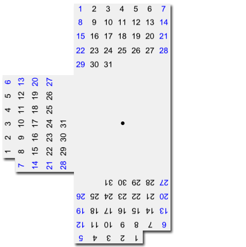
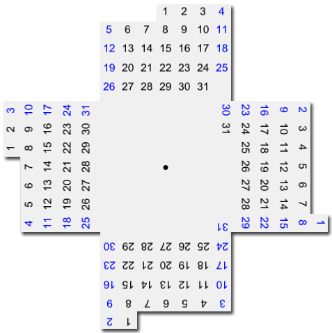
Spread over these two wheels are the seven possible 31-day month configurations, corresponding to the seven weekdays that the first falls on. The bottom wheel shows four of these seven, and the top one shows the remaining three and has a "cutout" in the fourth position. When one of the top wheel's configurations is needed for the current month, that configuration rotates around to be at the top and thus visible in the window; when one of the bottom wheel's configurations is needed, the top wheel rotates so its cutout section is at the top, letting the bottom wheel show through.
Since all of the configurations on the primary wheels display 31-day months, covers slide in from the right to cover days which don't exist in the current month (for example, as shown below, the missing days 30 and 31 in a leap-year February). These covers are inscribed with the days of the following month, and their numbers align with the correct days of the week:
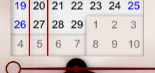
Similarly, the last few days of the previous month are shown with sliders that slide underneath the current month, sliding to show the days in their proper weekday positions:
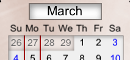
Mauna Kea
Mauna Kea (the site of several of the world's largest telescopes) displays a variety of astronomical information.
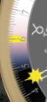
On Mauna Kea the outer ring is a 24-hour dial which rotates so that the time of local solar noon ("local apparent noon") is at the top. The Sun indicator shows the local 24-hour time (04:30 in this example). The outer ring's background is divided into day and night sections with twilight in between. These regions move according to the season and the watch's latitude. The straight edges of the yellow semi-circles mark the exact times of sunrise and sunset (05:53 in the example at left). When there is no sunrise or sunset (at high latitudes) they disappear behind a cover. Also on the outer dial is a green triangle indicating the current UTC time.The next ring in is marked with the constellations of the zodiac. It rotates so that the constellation currently transiting the meridian (i.e., due south for northern observers) is at the 12 o'clock position on the face (between Gemini and Taurus in the example at right).
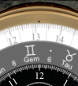
The Sun indicator also shows the position of the Sun in the sky relative to the zodiac. Another way of saying this is that the zodiac dial rotates once per sidereal day; its numbers represent local apparent sidereal time (approximately, for times within a few centuries of the present). The Moon indicator shows the position of the Moon with respect to the zodiac and the Sun (but it is not related to the time dials).Note that the positions of the constellations are (approximately) astronomically correct for the present era and do NOT correspond to the "signs" of Western astrology. (The Western division of the sky into constellations is at least 2500 years old; for most of that time astronomy and astrology were the same thing. Though in modern times an astronomer will cringe at being called an astrologer, much of the ancient terminology remains in use in science.)
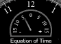
The small half-dial at 12 o'clock shows the "Equation of Time". Though you might think from the name that this is the Holy Grail of 21st-century physics, it is actually just the difference between clock time and apparent solar time (or sundial time) for the standard meridian of the local time zone. The arc spans the actual range of the Equation of Time, from −14.2 to +16.5 minutes. It varies over the year because the Earth does not move at a constant angular velocity around the Sun; positive means the sundial is ahead. This was indeed of critical importance to mariners before the days of electronic navigation. They could determine their longitude by observing the time of local noon and comparing that to their chronometers. But that comparison requires adding in the Equation of Time; without that correction the calculation could be off by hundreds of miles.The outer dial, with local solar noon at the top, does not always have 12 o'clock at the top for several reasons. It moves ahead (counterclockwise) for daylight time. It is offset by the Equation of Time (which can be a quarter of an hour either way). And the distance away from the standard meridian of the time zone can result in a shift of more than an hour in some cases.
Haleakalā
Haleakalā's two sub-dials show the time of the sunrise and sunset for the current day.The outermost dial and the thin blue hand indicate the current azimuth of the Sun. The inner arc of dots and the thin green hand indicate the Sun's current elevation; there is one dot per 10 degrees.
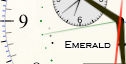
The three additional dots corresponding to elevations of -6, -12, and -18 mark the boundaries of civil, nautical and astronomical twilight. In the example at left, the Sun is about 10 degrees below the horizon and it is nautical twilight.The dot at 6 oclock is black for PM and white for AM.
Hana
Hana's two sub-dials show the time of the moonrise and moonset for the current day. If there is no moonrise or moonset for the day shown then the corresponding dial will indicate 12:00 and its AM/PM indicator will show "--".The outermost dial and the thin blue hand indicate the current azimuth of the Moon. The inner arc of dots and the thin green hand indicate the Moon's current elevation; there is one dot per 10 degrees.
The dot at 6 oclock is black for PM and white for AM.
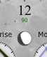
The phase of the Moon is shown just below 12 o'clock with a small indicator similar to Chandra's. Like that indicator it rotates to show the orientation in the sky at the user's location.
Chandra
Chandra (Hindi for "Moon") shows the near side of the Moon as seen from the watch's current location and time. The faint lines on the dark side are the edges of the covers that move to define the position of the terminator. The image rotates to correspond to the Moon's orientation in the sky relative to the local horizon. The Moon's image is shown ignoring libration.Three windows show the day of the month, the month, and AM/PM.
There are also two tiny "stars", a red one near the Moon's limb and a blue one near the edge of the case.
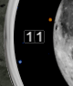
They indicate the Moon's altitude (elevation above the horizon) and azimuth respectively. In example shown at right, the Moon is about to set just south of west.Selene
Selene (Greek goddess of the Moon) shows the phases of the Moon.The main black hand indicates the difference between the Moon's ecliptic longitude and the Sun's; this is a representation of the Moon's cycle through the phases. Straight up is new moon (0 age), at right is first quarter (about 7.5 days old), straight down is full moon (about 15 days), left is 3rd (last) quarter (about 22 days old). A complete lunar cycle is about 29.5 days (though it actually varies by several hours from month to month).
Underneath the black hand is a white "Elongation" hand showing the angular separation between the Sun and the Moon in the sky. Note that for most of the time as the Moon increases from New to Full (the right half of the dial), the elongation is very close to the value of “Delta Ecliptic Longitude” (or moon phase) shown by the black hand, and the white elongation hand will be “hiding behind” the black hand. But when the elongation is close to 0 or 180 degrees, and the Moon's ecliptic latitude is not close to zero, the elongation will be different enough for the hand to “peek out”. And during the waning cycle from Full to New (the left side of the dial), the two hands are on opposite sides of the dial and will both be clearly visible, as shown in the images at the top of this page.
When the angular separation is less than about 90 degrees, we calculate it using the positions of the Sun and the Moon as seen from the observer's position (topocentric coordinates), as that is most useful when the objects are close together. When the angular separation is larger than that, we switch to using the positions as seen from the center of the Earth (geocentric coordinates), as that is most useful close to a full moon where there is the possibility of a lunar eclipse (the shadow thrown by the Earth is centered at the Earth center, and doesn't depend on the observer's position).
The outermost dial with the degree markings for the previous two hands is colored alternately dark and light. Each dark or light section represents a 24-hour day, so you can easily count how many days until the next quarter by counting sections from the main black hand to the quarter's indicator. You can also estimate the approximate time of day that quarter will occur by seeing where in its colored section it lies (if the main black line for the quarter is close to the forward part of its colored section, the event will happen late in that day).
These sections are accurate for nearly a full lunar cycle centered around the current time. That is, you can count sections, forward or backward from the main black hand, for 14 days in each direction, which will be just under half a lunar cycle.
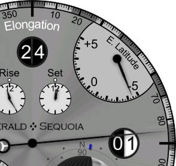
The numbers in the quarter icons show the date when that phase occurred or will occur. The two clockwise from the main hand are in the future, and the two behind the main hand show dates in the past. The main black hand passes over the indicator on the date shown. Frequently the dates are in different calendar months; in example at left for 2020 Feb 1 the previous new moon was on Jan 24 and the next 1st quarter moon will be Feb 1 later in the day and the Moon is about 85 degrees east of the Sun.The small dial at 2 o'clock shows the Moon's ecliptic latitude (which is its angular difference from the Sun in the dimension perpendicular to the longitude). The ticks on the dial represent 1 degree, about twice the apparent diameter of the Moon. When the hand is at the plus side the Moon is north of the Sun. In the example at the left the Moon is about 4.5 degrees south of the ecliptic.
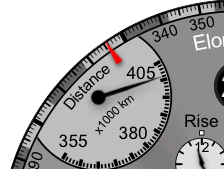
The small dial at 10 o'clock shows the distance from the center of the Earth to the center of the Moon (in thousands of kilometers). The example at the left shows a value of about 401,000 km.At the bottom left is a dial showing the current time, including the day of the month in a window. In the top center are dials showing moonrise and moonset for the current day; a small dot above each is white for AM, black for PM, and red if there is no such event on this day.
At the bottom right is a Moon phase dial like that of Chandra. Just outside the circle of that dial are two additional hands: the red inner one displays the altitude of the Moon from -90 to 90 degrees, and the blue outer one displays the azimuth.
The two thin red triangle hands on the main dial represent the "nodal" points of the Moon's orbit. These are the two points where the Moon's ecliptic latitude is zero, as the Moon cycles above and below the plane defined by the Earth's orbit around the Sun. The position of each hand indicates the delta ecliptic longitude (with respect to the Sun) of that nodal point, so that when the black hand passes over a red nodal point marker, the ecliptic latitude is zero at that time. The nodal markers (unlike the nodal hands on Basel) make a full revolution approximately once per year, as the ecliptic longitude of the Sun makes a similar revolution.
When a nodal marker and the main black hand are both near zero (new moon), a solar eclipse is possible. When both near 180 degrees (full moon), a lunar eclipse is possible.
Geneva
Geneva takes its name from the city in Switzerland, home to many of the world's finest watchmakers.Geneva is a complex multi-dial face with many traditional complications plus a few modern twists. There are 21 hands plus 9 additional indicators. The hours, minutes and seconds are standard (but with no numbers on the dial). There is an am/pm dot just above the 12 o'clock position (white for am, black for pm). The thin gray-blue hand with the circle on the outermost dial indicates the day of the month.
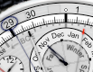
The first twist on the classic look is that the day numbers 29 thru 31 appear only as needed. To the left, for example, is the appearance for Nov 29, 294 CE.The white hand with a black tip indicates the last two digits of the year, read against
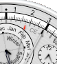
the inner gray dial with 100 divisions (zero is at the 12 o'clock position). The thin white hand with a red tip indicates the two digit century, read against the same dial. The example to the right shows the year 408 CE.The primary hand of the subdial at 12 o'clock indicates the month. The interior region of that dial, which is marked with the seasons, rotates so that the boundaries between the seasons are properly aligned to the calendar months (though this rotation is tiny since the Gregorian reform; it was a whole month in 6000 BCE).
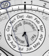
For more precision, the tiny hand in the seasons subdial changes at the exact time of each equinox and solstice (not just the beginnings of the usual days). Both are correct for both hemispheres (the example at left shows a southern hemisphere case).The primary hand on the subdial at 3 o'clock simply shows the current local time in 24-hour format
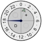
while the small gray-green arrow shows the UT hour. The local time always follows the local daylight savings time rules (for most jurisdictions; UT never uses DST). If daylight savings time is in effect a "D" will appear in the lower left quadrant; otherwise, an "S" will appear in the lower right. A "+" will appear in the upper right quadrant if the UT date is a day ahead of the local date, and a "-" will appear in the upper left if it is a day behind; otherwise both upper quadrants will be blank.The primary hand on the subdial at 9 o'clock shows the day of the week.
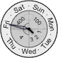
The tiny hand is another of Geneva's twists, a fully general leap year indicator. It points to 1, 2 or 3 in common years and 4 in regular leap years. But the Gregorian calendar skips 3 leap years every 400 years so the tiny hand points at 100 or 400 if one of the centurial rules applies. This is known as a "secular perpetual calendar" in horology jargon.The four small subdials indicate the times of the sunrise, sunset, moonrise and moonset events for the current day.
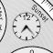
The moonrise and moonset dials have am/pm dots above. If there is no event for the current day the corresponding dial will read 12:00 and the am/pm dot will be red.The final twist is the moon phase indicator which shows a realistic terminator, rotated to match its actual orientation in the sky, exactly like the one on Chandra. Superimposed on this is a retrograde hand showing the age of the current lunation.
Basel
Basel takes its name from the city in Switzerland, home to the world's largest watch show. On Basel, there are 16 hands plus 12 additional indicators.
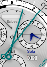
The primary hands show the local apparent sidereal time. The hour is read against the inner white dial of 24 numbers (hours of right ascension, RA), the minutes against the 60 unnumbered tick marks (minutes) on that dial.The precession of the equinoxes means that the position of the equinox moves with respect to the fixed stars. But the zero point of right ascension is the vernal equinox. (Equinox, in this context, means the intersection of the ecliptic plane and the Earth's equator, named because the apparent path of the Sun crosses that point at the time of the equinox).
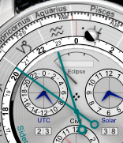
So since Basel's RA dial is fixed, the rings holding the names and astrological symbols of the constellations of the zodiac rotate slowly to compensate for the precession. The lines between the constellations indicate the points where the ecliptic crosses the constellation boundaries (for the present era). The sidereal hour hand thus indicates which constellation is currently highest in the sky. (The minute hand has no relation to the constellations.) In this example, the sidereal time is 22:51 in Aquarius in the year 2338 CE.The outer white ring is divided into the months of the year with a hairline at the beginning of each month and tick marks for every other day; the black tick marks represent even days of the month, and the spaces between represent odd days.
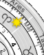
It, too, rotates with respect to the RA dial so that the Sun hand indicates the current date. (May 9 in this example.) But note that the relationship between the date ring and the zodiac ring is correct only at the position of the Sun hand, for two reasons: Because the Earth's orbit is elliptical (not an exact circle), the Sun moves more slowly against the stars at some times during the year than at others. Also, the Sun's motion is in the ecliptic plane which is tilted with respect to the reference plane of the RA coordinate system (the equator). So the Sun does not move at a constant rate around the RA dial during the year, but speeds up and slows down at intervals. The date ring rotates so that the current date is always under the Sun, but that means that other dates are in slightly different spots when the Sun gets there.There are red hairline indicators over the zodiac ring (fixed at 0, 6, 12, and 18) which mark the positions of the equinoxes and solstices, and a plus sign between Aquarius and Pisces on the zodiac ring which marks the RA position of the vernal equinox in the year 2000. There are four smaller red hairline indicators over the date ring which move slowly to indicate the dates of the equinoxes and solstices. They stay close to the fixed indicators but they don't always line up exactly because as mentioned above the date ring does not match the zodiac ring except exactly at the Sun's position.
The Sun and Moon hands show their positions with respect to the RA dial and the constellations (and each other). The red Ω-shaped hands show the positions of the lunar ascending and descending nodes (the ascending node indicator has the Ω rightside-up at 12 o'clock).
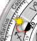
When the Sun and Moon coincide and are close to one of the nodes it is possible that there may be a solar eclipse; when the Sun is close to one node and the Moon is opposite to it a lunar eclipse may occur.The eclipse dial at the top center indicates if there is an eclipse happening at the observer's location and time. See Predicting Eclipses with Emerald Chronometer for more information about predicting eclipses with the nodal hands and the eclipse dial.
Also, note that when the ascending-node hand coincides with the vernal equinox
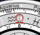
(at the 12 o'clock position) the Moon will reach extremes in several dimensions, including north and south declination, northern and southern azimuths of rise/set points on the horizon, and altitudes crossing the meridian. See here for more detail.The subdial at 2 o'clock shows apparent solar time (sundial time) in 12-hour format. (Note that the Sun hand and the sidereal hour hand will always coincide when the solar time is 12:00.)
The subdial at 10 o'clock shows UTC in 24-hour format.
The subdial at 6 o'clock shows ordinary clock time with seconds and an AM/PM indicator.
The left window (beneath the UTC subdial) shows the first two digits of the year number (centuries), the right window (beneath the Solar subdial) shows the last two digits.
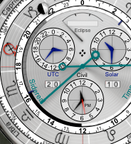
Finally, just inside the RA dial is a ring which shows the sidereal times when the Sun and Moon illuminate the sky for this day. The white region is bounded by sunrise and sunset and thus shows the daytime hours (in sidereal time). The dark regions represent nighttime with gray when the Moon is up and black for full night. There are also two tiny hands that indicate the (sidereal) times of moonrise and moonset. In this example, it is about an hour before moonrise (as indicated by the sidereal hour hand), moonset is a bit before 3, and Libra is near the meridian.Firenze
Firenze (sometime home to Galileo Galilei) is one of Emerald Chronometer's orreries..Firenze shows a heliocentric view of the solar system (as it was known in Galileo's day, with only 6 planets) plus the Earth's Moon.
The view is from far above the Sun's north pole; the planets move counter-clockwise as time moves forward (and the Moon similarly moves counter-clockwise around the Earth). Only the angular positions of the planets are represented; the relative distances and sizes are wildly out of scale (as they must be in a practical sized display: If Saturn's orbit was shown at the same scale as the Earth's the watch would have to be about 5x larger than it is. If the Sun image was shown at the same scale as the Earth it would be almost 5x larger than the whole screen. If the Earth-Sun distance was shown at the same scale as the Earth image it would be more 10,000x larger!).
The constellations of the zodiac are marked around the perimeter of the face. The position of each planets is correct with respect to them from the perspective of the Sun. The angular positions of the other planets with respect to the Earth can be estimated only very approximately with this display since it is so greatly out of scale. (For that purpose, use Venezia.)
Venezia
Venezia shows info about one planet at a time but lets you select which one. You can use the planet selector buttons below the face to cycle through the available planets.In addition to the 5 planets visible to the naked eye, the Sun, and the Moon, all of which are shown on Miami and Firenze, this face also can show information about Uranus and Neptune, which can, with a little effort and the knowledge of where to look, be seen with binoculars or a small telescope.
The three subdials show the rise, transit, and set times for the selected planet on the current day. The tiny dot above 12 on each one is black for PM, white for AM, and red if there is no such time for the selected planet for this day. (There is always a transit time, which is defined as the time at which the planet crosses the meridian, though at high latitudes it may be below the horizon.)
The long cyan hand indicates the selected planet's azimuth read against the outermost dial. The shorter magenta hand indicates its altitude read against the magenta half-dial. And the yellow hand indicates its position in the zodiac read against the yellow arc on the right. In addition, three tiny sun icons always show the position of the Sun on these dials.
Near the top of the dial is a display indicating which planet is selected (a different image is displayed for each planet), with a phase indicator like that of Chandra. The same phase indicator is also shown for the planets, though only the inner planets (Mercury and Venus) have any appreciable phase to display.
In example at the top of the page, the selected planet (actually the Moon in this case) is almost exactly due west at 272 degrees azimuth, at 7 degrees above the horizon, 123 degrees west of and lower than the Sun.
The large central hands show hours and minutes in ordinary 12-hour format (but with no dial). The dot just above the six o'clock position is black for PM and white for AM.
Terra
Terra and Gaia are world-time faces.On Terra, there are 24 cities arrayed around the outer edge of the front of the face; you may customize the selection of cities from the 80,000-city database (see below). Each city has an associated "dot hand" which indicates that city's time against the 24-hour ring (in black and white, just inside of the city ring). If the city's time zone uses Daylight Saving Time (DST, also called Summer Time in some locales), then the dot hand will move along its "channel" twice a year when DST transitions for that city; each dot moves independently of the others according to the rules for its city's time zone. If the city's time zone does not use DST, there will not be a channel for the dot, but instead a dashed line under the city to associate the city with the dot.
The city fully underneath the clear overlay indicator at the top of the face is used to determine the time shown by the large "main" 12-hour hands in the center of the face, along with the date and day of the week shown in the windows. Below the selected city, over the 24-hour dial, is a smaller clear indicator with a hairline center; this will be aligned with the top city's dot, and thus will indicate the 24-hour time of the selected city on the 24-hour dial. The selected city is determined by your current location, which is shown in the control panel below the face. To change the selected city, use the location button below the face to set a new location.
For example, in the picture below, New York is the selected city (and thus New
York's time will be displayed in the central dial). New York has a solid
channel for its dot, so its time zone uses Daylight Saving Time, and DST is in
effect (the dot is at the right end of its channel). We can see from
Santiago's dot that the times in Santiago and New York are the same at the
current time, but that Santiago is not on DST at the current time (its dot is
at the left of its channel).
 The time in New York (and Santiago) is about 22:15, or 10:15pm, since the dots
for those cities are aligned with that time on the 24-hour dial (we also know
it's evening because the time is in the dark "night" zone from 6pm to 6am).
The time in New York (and Santiago) is about 22:15, or 10:15pm, since the dots
for those cities are aligned with that time on the 24-hour dial (we also know
it's evening because the time is in the dark "night" zone from 6pm to 6am).
 In the picture at right, it may be seen that Dakar does not use DST,
because it has a dashed line in place of the dot-motion channel. In this
picture we can also see the green UTC hour hand in the black portion of the
24-hour dial (Dakar's timezone is at UTC+0 year-round).
In the picture at right, it may be seen that Dakar does not use DST,
because it has a dashed line in place of the dot-motion channel. In this
picture we can also see the green UTC hour hand in the black portion of the
24-hour dial (Dakar's timezone is at UTC+0 year-round).
The city labels are "laser etched" into the ring so that the background shows
through, and underneath the ring are colored background parts that move to
change the apparent color of the city labels. If the city label is black, it
means that the city is on the same day as the central "main" time, and thus
the city's day may be read from the central windows.
 If the city label is green, it means the city is on the next day (relative
to the central windows), and if the city label is red,
If the city label is green, it means the city is on the next day (relative
to the central windows), and if the city label is red, it means the city is on the previous day. These two pictures show the same
time (11:30pm in London, 12:30am the next day in Paris) with the outer ring in
two different positions; when London is selected by the clear overlay, Paris
is on the next day and is green, but when Paris is selected, London is on the
previous day and is red.
it means the city is on the previous day. These two pictures show the same
time (11:30pm in London, 12:30am the next day in Paris) with the outer ring in
two different positions; when London is selected by the clear overlay, Paris
is on the next day and is green, but when Paris is selected, London is on the
previous day and is red.
There are 24 blue dots on the central world map, and they indicate the locations of the 24 cities arrayed around the city ring:

Because the cities are at different latitudes (and offsets
 from the nominal longitudinal time zone meridian), it is not possible to
display the actual times of sunrise and sunset (and thus the daytime and
nighttime hours) for all 24 cities,
from the nominal longitudinal time zone meridian), it is not possible to
display the actual times of sunrise and sunset (and thus the daytime and
nighttime hours) for all 24 cities,
 and so the day/night ring on this face is fixed with 12 hours of day (white)
and 12 hours of night (black). Contrast this with
Mauna Kea, and with Gaia,
where the actual times of day and night, based on the sunrise and sunset times
at a single location, are shown.
and so the day/night ring on this face is fixed with 12 hours of day (white)
and 12 hours of night (black). Contrast this with
Mauna Kea, and with Gaia,
where the actual times of day and night, based on the sunrise and sunset times
at a single location, are shown.
Nearly all cities will have their dot either to the left or the right of the
city label center, rather than directly underneath the center.
 This is done to minimize the distance the dot must be from the label when DST
is in effect; for example, when New York is on standard time (EST, UTC-5), the
dot is slightly to the left of the label center, but when it is on daylight
time (EDT, UTC-4), the dot is slightly to the right of the label center. The
same placement rule is followed for cities that do not have DST, so that the
cities can be evenly spaced around the ring; this has the additional advantage
that such cities can usually appear in two different positions on the ring,
thus giving more flexibility to the choice of cities (see below).
This is done to minimize the distance the dot must be from the label when DST
is in effect; for example, when New York is on standard time (EST, UTC-5), the
dot is slightly to the left of the label center, but when it is on daylight
time (EDT, UTC-4), the dot is slightly to the right of the label center. The
same placement rule is followed for cities that do not have DST, so that the
cities can be evenly spaced around the ring; this has the additional advantage
that such cities can usually appear in two different positions on the ring,
thus giving more flexibility to the choice of cities (see below).
Settings (customization)
This face allows you to customize the cities that are shown on the outer ring. Use the "Change cities" button below the face to search for and select cities.
NOTE: To avoid confusion, one of the cities on the ring must display
the time in the timezone your device has been set to. Usually this is not an
issue, but in certain rare circumstances your choice may be overridden if that
choice would mean there is not a slot that can display the device time.
Note: It is not necessary to know these rules in order to use Terra.
They are provided as background information for the curious.
Rules for which slot(s) of the World Time Ring that a city may
appear in:
The general rule is that a city may appear only in the slot(s) which
minimize the maximum travel of the "dot hand" from the center of the city
label. Labels are centered at an angular position which corresponds to a
time halfway between two integral UTC hour offsets, so that cities with
DST will have their two offset times arrayed on either side of the label
center.
This minimization of the dot's distance from the label means that a city
which has DST can typically appear in only one slot, unless the two
offsets are exactly 30 minutes from an integral UTC hour offset. For
example,
But Adelaide, Australia has offsets at UTC+10:30 in the summer and
UTC+9:30 in the winter; it can go either in the slot whose label is
centered at UTC+9:30 or the slot centered at UTC+10:30,
On the other hand, a city with no DST but which has an integral UTC hour
offset can also go in two slots. For example, Honolulu, with its
unchanging offset of UTC-10, can go either in the slot whose label is
centered at UTC-10:30
Finally, a city with no DST but with a non-integral UTC hour offset can
only go in one slot. For example, Delhi, with an unchanging offset of
UTC+5:30,
In addition to these rules, there is a more complex rule that the device's
time zone must appear in one of the 24 slots, so that the slot may be
selected and the main time hands can show the time of the device. This
rule is invoked when the slot normally associated with the device time
zone contains a city with different DST rules. In this situation a message
is displayed and your choice is overridden.
Timezone Slot Rules (tap to expand)
 For example, notice that the green UTC hand is at 3:30am, and that the
label for London is *centered* at 4am, 30 minutes to the right of UTC,
meaning UTC+0:30, and the label for Dakar is *centered* at 3am, 30 minutes
to the left of UTC, meaning UTC-0:30. Each of the labels is similarly on a
:30 UTC offset, even though the city *dots* are typically on integral UTC
hour offsets (as with London and Dakar here, whose dots coincide with
UTC+0 at 3:30am).
For example, notice that the green UTC hand is at 3:30am, and that the
label for London is *centered* at 4am, 30 minutes to the right of UTC,
meaning UTC+0:30, and the label for Dakar is *centered* at 3am, 30 minutes
to the left of UTC, meaning UTC-0:30. Each of the labels is similarly on a
:30 UTC offset, even though the city *dots* are typically on integral UTC
hour offsets (as with London and Dakar here, whose dots coincide with
UTC+0 at 3:30am).
 New York City has offsets of UTC-5 in the winter and UTC-4 in the summer;
the minimum-dot-travel requirement means it can only appear in the slot
whose city label is centered at UTC-4:30. In the picture above, it clearly
can't go either where Chicago or Santiago is, given its dot's travel
range.
New York City has offsets of UTC-5 in the winter and UTC-4 in the summer;
the minimum-dot-travel requirement means it can only appear in the slot
whose city label is centered at UTC-4:30. In the picture above, it clearly
can't go either where Chicago or Santiago is, given its dot's travel
range.
 because either choice results in the dot being a maximum of one hour from
the label center. Here we've put it in both slots just to illustrate the
capability.
because either choice results in the dot being a maximum of one hour from
the label center. Here we've put it in both slots just to illustrate the
capability.
 or the slot centered at UTC-9:30; each choice results in the dot being 30
minutes from the label center. Here again we've put it in both slots for
illustration.
or the slot centered at UTC-9:30; each choice results in the dot being 30
minutes from the label center. Here again we've put it in both slots for
illustration.
 can only go in the slot whose label is centered at UTC+5:30; at that
position its dot is directly underneath the label center.
can only go in the slot whose label is centered at UTC+5:30; at that
position its dot is directly underneath the label center.
Miami
Miami shows the rise and set times of all of the classical "planets" at the same time. The innermost ring represents the Moon, followed by Mercury, Venus, Mars, Jupiter, Saturn and finally the Sun on the outside. The colored part of each ring represents the time interval when the planet is above the horizon. The light gray region for the Sun (which represents daytime) is reproduced on all the rings.The single hand shows the current 24-hour time (with midnight on top). A planet is currently above the horizon if the hand intersects the colored part of its ring.
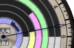
So in the example to the right: the time is about 5:15am, about 45 minutes before sunrise; the Moon, Mars and Jupiter are up; Venus is just rising; and Mercury and Saturn are below the horizon.Gaia
Gaia and Terra are world-time faces.Gaia has four subdials, each of which displays information for a single city, whose name is labelled on the bottom of its subdial. As with Terra, you may customize the particular set of cities shown from the 80,000-city database.
Each subdial has a central set of 12-hour hands, a day/night ring like that of Mauna Kea showing the actual times of day and night against an outer 24-hour dial, a Sun hand which indicates the approximate time against that outer dial, and windows for AM/PM and for the day of the week.
For example, in the picture to the left,
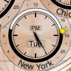
it's around sunset in New York on Tuesday, about 5:25pm. The time can be read most easily by the central 12-hour hands and the PM in the window, but it may also be approximately read with the 24-hour sun hand, which is between the 18 and the previous dot at 17.In addition, the largest subdial on the left contains a second hand and a window for the day of the month. The largest subdial will always display the device time (to avoid confusion), but you can set it to a different city name within the same time zone. The day/night dial will show the sunrise and sunset time of whatever city name is displayed on the dial.
The face also has a small moonphase dial in the upper left. It does not rotate like the moonphase dials on Chandra and others, because it is intended to apply to all of the cities shown (the moonphase does not depend in any significant way on observer position, but the rotation does).
Note that the timezone rules are obtained from the browser's operating system, and may not reflect recently-enacted rule changes.
Settings (customization)
This face allows you to customize the cities that are shown on each subdial. Use the "Change cities" button below the face to search for and select cities.
NOTE: The large subdial at left must display the time in the timezone your device has been set to. If you select a city in a different timezone, you will not be allowed to replace the large subdial. And if you later travel to a different timezone, the city you selected will move to one of the smaller subdials.
Vienna
Vienna is a 24-hour astronomical face exploring how the Sun's path through the sky changes over the course of the year. Three complications each reveal a different aspect of this annual cycle: the day/night rings show how sunrise and sunset times shift with the seasons, the Equation of Time dial captures the Sun's uneven pace along the ecliptic, and the analemma traces the figure-eight the Sun draws in the sky when observed at the same clock time each day.The hour hand makes one revolution per day on a 24-hour dial — note that this is not a standard 12-hour clock, so take care to read the time from the 24-hour markings. The outer ring shows the actual daylight and nighttime hours for your location: a white arc for day, black for night, and gray where the Moon is up at night. The hour hand's position against this ring tells you at a glance whether it is currently day, night, or moonlit night. The small green hand shows UTC time.
By default, midnight (24) is at the top of the dial. A pill toggle below the face lets you switch to noon on top if you prefer that orientation; the dial numbers, hour hand, UTC hand, and day/night rings all rotate together to match. Your choice is saved in the URL so it persists when you bookmark the page.
The upper subdial is an Equation of Time dial, showing the difference between solar time and mean time. The arc spans the actual range of the Equation of Time, from −14.2 to +16.5 minutes, with tick marks at each whole minute up to ±15 and a hand indicating the current value. This is the correction you would apply to a sundial reading to get mean (clock) time: a positive value means the sundial is ahead of the clock, so you subtract the displayed amount.
The lower subdial displays the Sun's analemma — the figure-eight pattern traced by the Sun's position in the sky at the same time each day over the course of a year. A Sun marker shows today's position along the path. Colored tick marks indicate the equinoxes (green for vernal, orange for autumnal) and solstices (yellow for summer, blue for winter). The analemma rotates to match the Sun's current sky orientation at the observer's location.
Three date windows display the current month, day, and year.
Kyoto
Kyoto, the ancient capital of Japan, shows traditional Japanese time like an Edo period clock (和時計 wadokei).A wadokei divides day and night into six "temporal hours" each. The hours at sunrise and sunset are split between day and night, so each half of the day really has five full temporal hours and two halves. Because these hours divide the available daylight (or darkness) equally, their length changes with the seasons. The rate toggle ("Variable hand rate" / "Constant hand rate") controls how this is shown: in variable mode the hand speeds up and slows down to match the unequal hours, while in constant mode the dial markings shift position instead and the hand moves at a steady pace.
In addition, some old Japanese clocks used a moving dial and a fixed pointer rather than a moving hand. The hand toggle ("Moving hand" / "Fixed hand") lets you switch to this style: in "Fixed hand" mode the hand stays at 12 o'clock and the entire dial rotates beneath it instead. When in this mode the rate toggle labels change to reflect that it is the dial rate, not the hand rate, that varies.
The face here has a gray 24-hour dial so that modern viewers can understand the face better (in particular, how in "variable hand rate" mode the modern hours are closer together on the face).
The gray ring around the outside of the face indicates the division between day and night: the lighter portion represents daytime and the darker portion nighttime. Its boundary aligns with the midpoints of the sunrise and sunset temporal hour indicators, showing how the unequal hours expand and contract with the changing length of the day throughout the year.
A real Wadokei clock would of course have neither the 24-hour dial nor the day/night ring.
Milano
Milano has a secular perpetual calendar with four retrograde complications, which are hands that snap back to their starting positions without going all the way around.
The cyan hand shows the current month.
The yellow hand shows the date.
The green hand shows the day of the week.
The magenta hand indicates the fraction of the remaining power reserve (battery level on your device). This hand and its dial are automatically hidden if your browser or device does not support the Battery Status API. (Note that some browsers support the API but hardcode the value to 1.0; this app has no way of detecting this situation.)